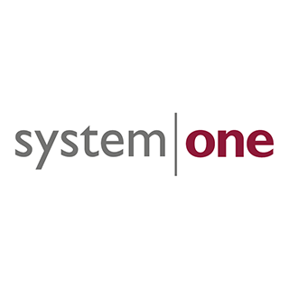

UI/UX Lead
View Job Listing
This role would be an incredible opportunity because it combines leadership with hands-on UX practice
in a way that lets me grow into the skills I want. Leading a team while getting to dive into research,
usability testing, and strategic design is exactly the combination I’m looking for. I like that the
role involves collaborating across departments and helping shape the overall digital experience.
The mentoring aspect excites me too—it would help solidify my own knowledge while helping others grow.
Overall, it feels like a challenging, skill-building role that supports where I want to go in UX.

Lead, UX Product Researcher
View Job Listing
This role is exciting because it blends research, strategy, and collaboration—all areas I’m passionate about.
I like that it involves planning and executing research studies throughout the product lifecycle, allowing me
to explore user behavior in depth. Working closely with cross-functional teams and translating complex data
into actionable insights feels like a great way to grow my communication and analytical skills. I’m also
drawn to the mix of qualitative and quantitative methods, which helps build well-rounded research thinking.
Overall, it seems like a role where I could make meaningful contributions while developing as a UX researcher.

UX Researcher & Design Strategist
View Job Listing
This role feels like a perfect fit because it combines UX research with strategic design decision-making.
I’m excited about the opportunity to run mixed-methods research and help lead workshops that guide direction.
Working with cross-functional teams would help me sharpen communication and storytelling while advocating for
user-centered thinking. I love that the role encourages evolving research practices and promoting strong
experience design. Overall, it’s the type of position where I could make an impact while developing as both
a researcher and strategist.